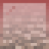

Lava Rising
From Kee Productions, a simple lava rising mini-game with a few twists. Currently, I'm in the process of minimizing this into something easy to host and quick to play. the playable arena will be 48x48. There will be an easy to use settings editor.